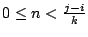

| Python Library Reference |
| Python Library Reference |
There are six sequence types: strings, Unicode strings, lists, tuples, buffers, and xrange objects.
String literals are written in single or double quotes:
'xyzzy', "frobozz". See chapter 2 of the
Python Reference Manual for more about
string literals. Unicode strings are much like strings, but are
specified in the syntax using a preceding "u" character:
u'abc', u"def". Lists are constructed with square brackets,
separating items with commas: [a, b, c]. Tuples are
constructed by the comma operator (not within square brackets), with
or without enclosing parentheses, but an empty tuple must have the
enclosing parentheses, such as a, b, c or (). A single
item tuple must have a trailing comma, such as (d,).
Buffer objects are not directly supported by Python syntax, but can be created by calling the builtin function buffer(). They don't support concatenation or repetition.
Xrange objects are similar to buffers in that there is no specific
syntax to create them, but they are created using the xrange()
function. They don't support slicing,
concatenation or repetition, and using in, not in,
min() or max() on them is inefficient.
Most sequence types support the following operations. The "in" and "not in" operations have the same priorities as the comparison operations. The "+" and "*" operations have the same priority as the corresponding numeric operations.2.7
This table lists the sequence operations sorted in ascending priority (operations in the same box have the same priority). In the table, s and t are sequences of the same type; n, i and j are integers:
| Operation | Result | Notes |
|---|---|---|
x in s |
True if an item of s is equal to x, else False |
(1) |
x not in s |
False if an item of s is
equal to x, else True |
(1) |
s + t |
the concatenation of s and t | (6) |
s * n , n * s |
n shallow copies of s concatenated | (2) |
s[i] |
i'th item of s, origin 0 | (3) |
s[i:j] |
slice of s from i to j | (3), (4) |
s[i:j:k] |
slice of s from i to j with step k | (3), (5) |
len(s) |
length of s | |
min(s) |
smallest item of s | |
max(s) |
largest item of s |
Notes:
in and not in operations act like a substring test. In
Python versions before 2.3, x had to be a string of length 1.
In Python 2.3 and beyond, x may be a string of any length.
0 are treated as
0 (which yields an empty sequence of the same type as
s). Note also that the copies are shallow; nested structures
are not copied. This often haunts new Python programmers; consider:
>>> lists = [[]] * 3 >>> lists [[], [], []] >>> lists[0].append(3) >>> lists [[3], [3], [3]]
What has happened is that [[]] is a one-element list containing
an empty list, so all three elements of [[]] * 3 are (pointers to)
this single empty list. Modifying any of the elements of lists
modifies this single list. You can create a list of different lists this
way:
>>> lists = [[] for i in range(3)] >>> lists[0].append(3) >>> lists[1].append(5) >>> lists[2].append(7) >>> lists [[3], [5], [7]]
len(s) + i or
len(s) + j is substituted. But note that -0 is
still 0.
i <=
k < j. If i or j is greater than
len(s), use len(s). If i is omitted,
use 0. If j is omitted, use len(s). If
i is greater than or equal to j, the slice is empty.
x = i + n*k such that
. In other words, the indices
are i, i+k, i+2*k, i+3*k and so on, stopping when
j is reached (but never including j). If i or j
is greater than len(s), use len(s). If
i or j are omitted then they become ``end'' values
(which end depends on the sign of k). Note, k cannot
be zero.
s=s+t or
s+=t. When applicable, this optimization makes
quadratic run-time much less likely. This optimization is both version
and implementation dependent. For performance sensitive code, it is
preferable to use the str.join() method which assures consistent
linear concatenation performance across versions and implementations.
Changed in version 2.4:
Formerly, string concatenation never occurred in-place.
| Python Library Reference |